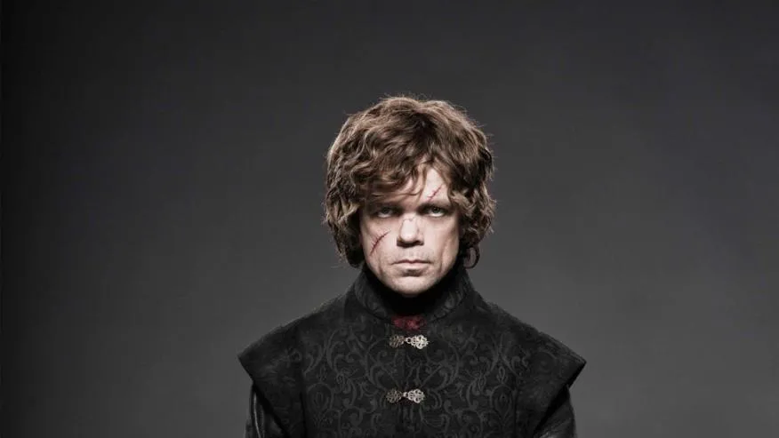
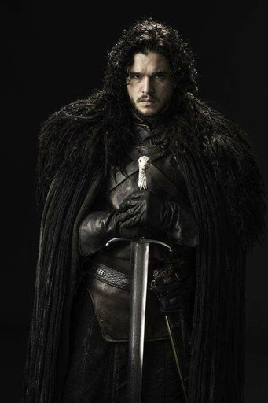

En un mundo fantastico y en un contexto medieval varias familias, relativas a la nobleza, se disputan el poder para dominar el territorio ficticio de Poniente (Westeros) y tomar el control de los Siete Reinos desde el Trono de Hierro, lugar donde el rey ejerce el poder.
Mientras tiene lugar una guerra civil para conseguir el poder, detras del Muro que divide el reino de Poniente y la zona norte, los muertos amenazan con librar la batalla contra los vivos.
Entretanto, Daenerys Targaryen, la hija del antiguo rey, regresa a Poniente para reclamar su lugar y así vengar el deceso de sus ascendientes en la guerra civil anterior.
